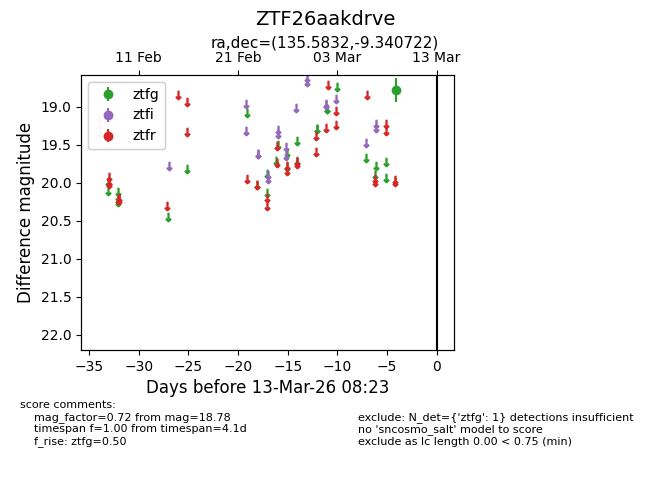
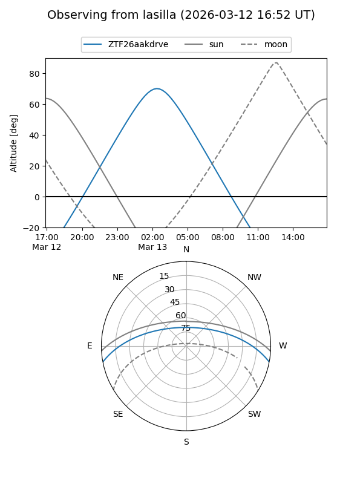
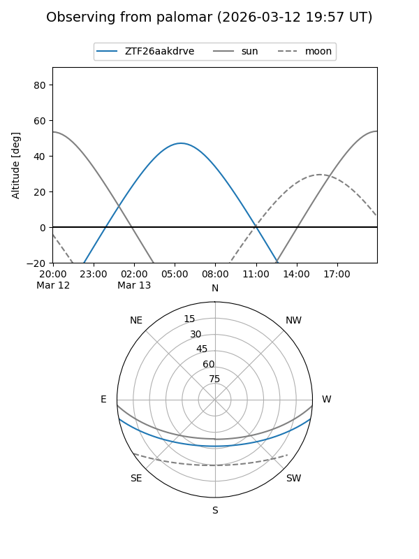

ZTF26aakdrve
Target ZTF26aakdrve at 2026-03-13 08:25
Aliases and brokers:
FINK: link
Lasair: link
ALeRCE: link
alt names
ZTF26aakdrve (ztf,fink_ztf)
Coordinates:
equatorial (ra, dec) = 135.5832,-9.34072
equatorial (HMS+DMS) = 09:02:19.96,-09:20:26.60
galactic (l, b) = (237.9650,+23.62378)
Flags:
Photometry:
last ztfg=18.78
1 ztfg detections
Lightcurve

Visibility


Additional plots